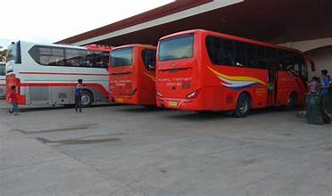
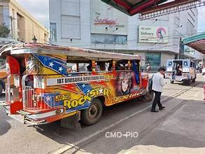
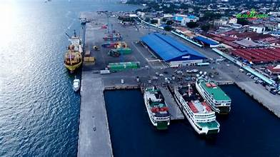
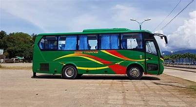
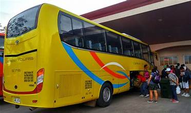
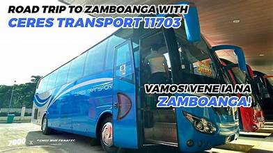

Transportation and infrastructure in Zamboanga del Sur are centered around Pagadian City, which serves as the main gateway to the province. Road networks, a domestic airport, and a seaport connect the province to the rest of the Philippines.
The Zamboanga Peninsula Highway is the main arterial road running through the province, connecting Pagadian City to major municipalities and to neighboring provinces. Secondary roads extend into interior municipalities, though many remain unpaved, making access difficult during the rainy season.
The Pagadian Airport provides daily flights to Cebu and Manila, making the province accessible by air. The airport has undergone upgrades to handle increased passenger traffic and supports economic and tourism development in the region.
The Port of Pagadian is an important hub for inter-island shipping, handling cargo and passenger vessels that connect the province to Cebu, Manila, and other ports. The port is essential for the movement of agricultural products, consumer goods, and construction materials.
Within Pagadian City and in municipalities, the primary modes of local transport are jeepneys, tricycles, and the city's iconic motorized pedicabs. The motorized pedicabs are uniquely suited to Pagadian's steep terrain and have become a symbol of the city's character.
The provincial government and national agencies continue to invest in road improvements, bridge construction, and port upgrades. Electrification and telecommunications infrastructure have expanded in recent years, though gaps remain in remote barangays.
Hover to fan · Hover a photo to pick


